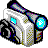
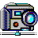
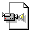
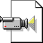

Navigation
Back to Home
YouTube Channels - Clouty Skies

Main Channel

Second Channel
Load the channel
YouTube loads only when you click — nothing third-party before that.

Main Channel - More "Cinematic" Content
Load the channel
YouTube loads only when you click — nothing third-party before that.

Second Channel - The Goofier Side
2 Items
© Clouty Skies